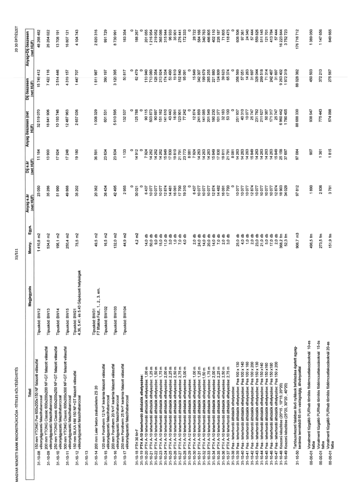

| Tétel | Megjegyzés | Menny. | Egys. | Anyag e.ár (net HUF) | Díj e.ár (net HUF) | Anyag összesen (net HUF) | Díj összesen (net HUF) | Anyag+Díj összesen (net HUF) |
|---|---|---|---|---|---|---|---|---|
| 31-10-08 | Típuskód: BW12 | 1 410,8 | m2 | 23 050 | 11 164 | 32 519 070 | 15 749 412 | 48 268 482 |
| 31-10-09 | Típuskód: BW13 | 534,0 | m2 | 35 286 | 13 900 | 18 841 906 | 7 422 116 | 26 264 022 |
| 31-10-10 | Típuskód: BW14 | 196,1 | m2 | 51 990 | 17 924 | 10 193 746 | 3 514 446 | 13 708 191 |
| 31-10-11 | Típuskód: BW15 | 250,4 | m2 | 49 868 | 17 248 | 12 487 963 | 4 319 157 | 16 807 121 |
| 31-10-12 | Típuskód: BW21, 4.36, 5.41, és 5.43 Gépészeti helyiségek | 75,5 | m2 | 35 202 | 19 180 | 2 657 036 | 1 447 707 | 4 104 743 |
| 31-10-13 | NaN | NaN | NaN | 0 | 0 | 0 | 0 | 0 |
| 31-10-14 | Típuskód: BW31, F7 liftakna Fszt., 1., 2., 3. em. | 49,5 | m2 | 20 362 | 36 591 | 1 008 329 | 1 811 987 | 2 820 316 |
| 31-10-15 | Típuskód: BW102 | 16,5 | m2 | 36 434 | 23 634 | 601 531 | 390 197 | 991 729 |
| 31-10-16 | Típuskód: BW103 | 132,0 | m2 | 42 495 | 23 634 | 5 610 595 | 3 120 395 | 8 730 991 |
| 31-10-17 | Típuskód: BW104 | 44,9 | m2 | 2 955 | 1 133 | 132 537 | 50 817 | 183 354 |
| 31-10-18 PTH 30 N+F | NaN | NaN | NaN | 0 | 0 | 0 | 0 | 0 |
| 31-10-19 PTH A-10 teherhordó áthidalók elhelyezése: | NaN | 4,2 | m2 | 30 021 | 14 912 | 125 788 | 62 479 | 188 267 |
| 31-10-20 | 1,00 m | 14,0 | db | 6 437 | 7 924 | 90 115 | 110 940 | 201 055 |
| 31-10-21 | 1,25 m | 50,0 | db | 10 077 | 14 263 | 503 873 | 713 080 | 1 216 954 |
| 31-10-22 | 1,50 m | 9,0 | db | 10 077 | 14 262 | 90 697 | 128 354 | 219 052 |
| 31-10-23 | 1,75 m | 15,0 | db | 10 077 | 14 262 | 151 162 | 213 924 | 365 086 |
| 31-10-24 | 2,00 m | 14,0 | db | 10 077 | 12 374 | 141 084 | 174 344 | 315 428 |
| 31-10-25 | 2,25 m | 3,0 | db | 14 481 | 17 830 | 43 443 | 53 490 | 96 933 |
| 31-10-26 | 2,50 m | 1,0 | db | 16 091 | 19 810 | 16 091 | 19 810 | 35 901 |
| 31-10-27 | 2,75 m | 7,0 | db | 17 700 | 21 791 | 123 901 | 152 540 | 276 441 |
| 31-10-28 | 3,00 m | 4,0 | db | 19 310 | 23 773 | 77 242 | 95 091 | 172 333 |
| 31-10-29 PTH A-12 teherhordó áthidalók elhelyezése: | NaN | NaN | NaN | 0 | 8 081 | 0 | 0 | 0 |
| 31-10-30 | 1,00 m | 2,0 | db | 6 437 | 7 924 | 12 874 | 15 849 | 28 722 |
| 31-10-31 | 1,25 m | 24,0 | db | 10 077 | 14 263 | 241 859 | 342 307 | 584 166 |
| 31-10-32 | 1,50 m | 14,0 | db | 10 077 | 14 263 | 141 085 | 199 679 | 340 763 |
| 31-10-33 | 1,75 m | 20,0 | db | 10 077 | 14 263 | 201 549 | 285 255 | 486 805 |
| 31-10-34 | 2,00 m | 14,0 | db | 12 874 | 15 849 | 180 237 | 221 880 | 402 116 |
| 31-10-35 | 2,25 m | 7,0 | db | 14 482 | 17 830 | 101 377 | 124 809 | 226 187 |
| 31-10-36 | 2,50 m | 2,0 | db | 16 091 | 19 811 | 32 183 | 39 623 | 71 805 |
| 31-10-37 | 2,75 m | 3,0 | db | 17 700 | 21 791 | 53 100 | 65 374 | 118 475 |
| 31-10-38 Pea - teherhordó áthidalók elhelyezése: | NaN | NaN | NaN | 0 | 8 081 | 0 | 0 | 0 |
| 31-10-39 | Pea 100 x 130 | 25,0 | db | 10 077 | 14 263 | 251 937 | 356 569 | 608 506 |
| 31-10-40 | Pea 100 x 140 | 4,0 | db | 10 077 | 14 263 | 40 310 | 57 051 | 97 361 |
| 31-10-41 | Pea 100 x 160 | 1,0 | db | 10 077 | 14 263 | 10 077 | 14 263 | 24 340 |
| 31-10-42 | Pea 150 x 130 | 2,0 | db | 12 874 | 15 849 | 15 849 | 31 697 | 57 444 |
| 31-10-43 | Pea 150 x 140 | 23,0 | db | 10 077 | 14 263 | 231 782 | 328 044 | 559 826 |
| 31-10-44 | Pea 150 x 160 | 21,0 | db | 10 077 | 14 263 | 211 627 | 299 518 | 511 145 |
| 31-10-45 | Pea 150 x 180 | 5,0 | db | 10 077 | 14 263 | 50 387 | 71 314 | 121 701 |
| 31-10-46 | Pea 150 x 200 | 17,0 | db | 10 077 | 14 263 | 171 317 | 242 467 | 413 784 |
| 31-10-47 | Pea 150 x 200 | 2,0 | db | 12 874 | 15 849 | 15 849 | 31 697 | 57 444 |
| 31-10-48 | NaN | 368,2 | fm | 18 903 | 25 158 | 6 960 442 | 9 263 402 | 16 223 844 |
| 31-10-49 | NaN | 52,3 | fm | 34 028 | 37 697 | 1 780 405 | 1 972 319 | 3 752 723 |
| 31-10-50 | NaN | 906,7 | m3 | 97 812 | 97 084 | 88 688 330 | 88 028 382 | 176 716 712 |
| 00-00-01 | 10-es falba | 496,5 | fm | 1 890 | 907 | 938 547 | 450 503 | 1 389 050 |
| 00-00-01 | 15-ös falba | 273,5 | fm | 2 836 | 1 361 | 775 443 | 372 213 | 1 147 656 |
| 00-00-01 | 20-as falba | 151,9 | fm | 3 781 | 1 815 | 574 098 | 275 567 | 849 665 |
